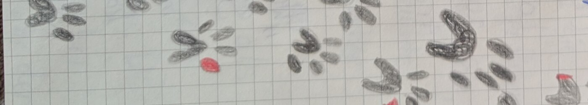
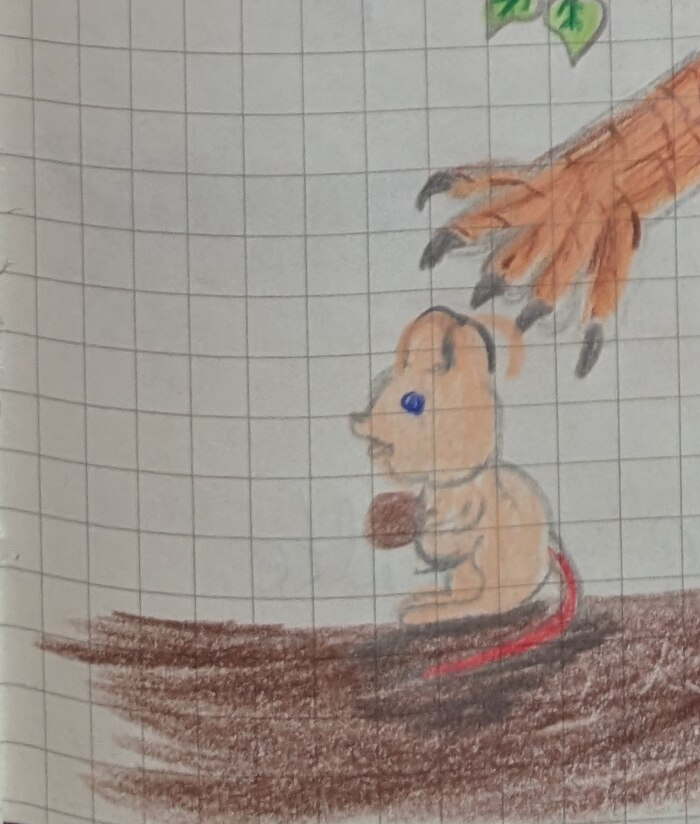
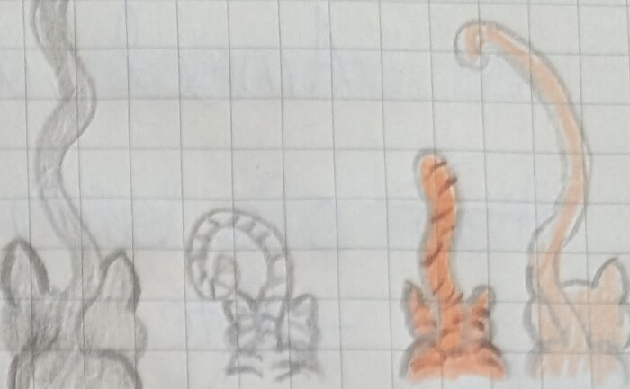
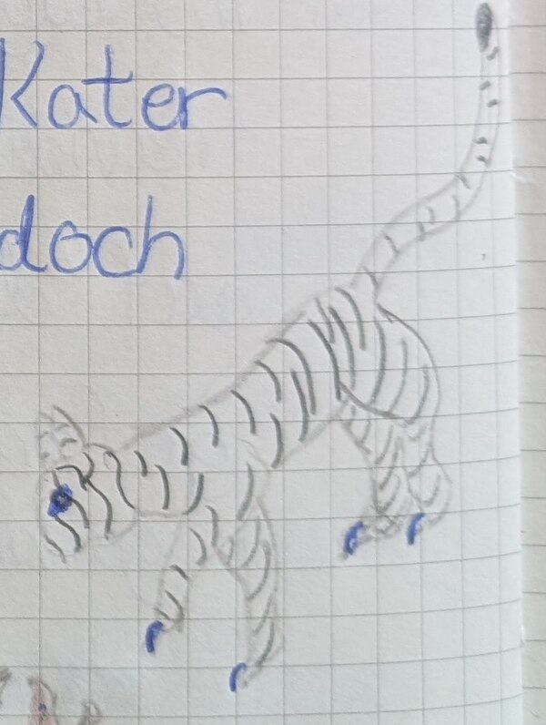
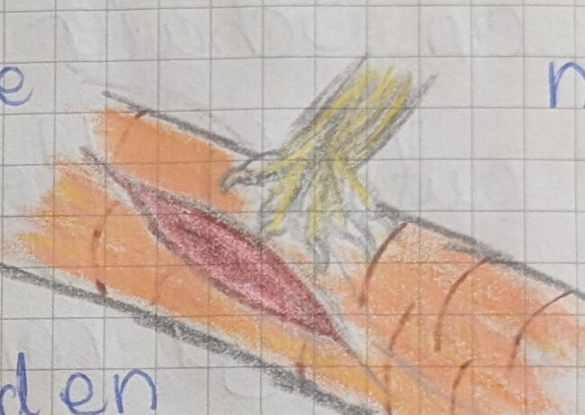
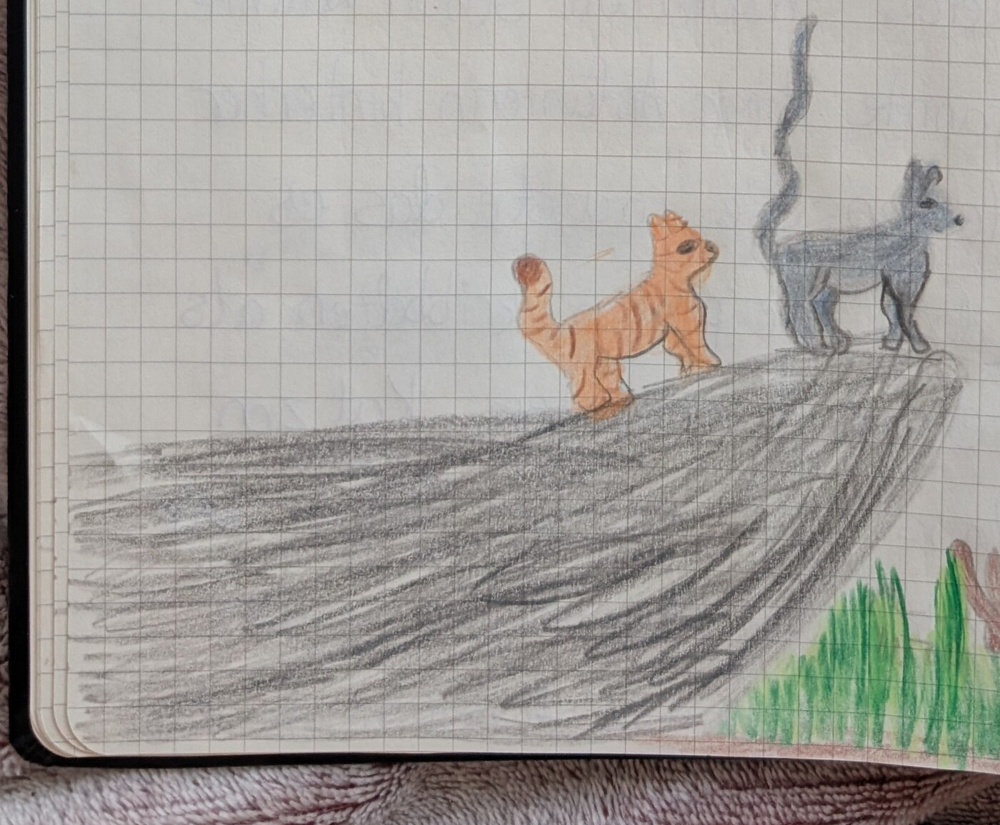

„Sie sind da!“ rief Silbermond aus der Kinderstube. Sofort rannte Blaustern, die Anführerin des Lichtclans, zu ihr.
„Wie möchtest du deine Jungen nennen?“ fragte sie erfreut.
Die silbrig-weiße Kätzin leckte ihren drei Jungen über die Köpfe. Der rotbraune Kater öffnete zuerst die Augen. „Das soll Funkenjunges sein“, sagte Silbermond stolz. Die beiden Kätzchen balgten sich. Das eine war klein und Silbermond lächelte: „Du wirst Zwergjunges heißen.“ Die große schildpattfarbene Kätzin rollte sich im Stroh und Silbermond schaute sie stolz an: „Das ist Buntjunges.“

Es war sechs Monde her, dass Funkenjunges, Zwergjunges und Buntjunges geworfen wurden. Buntjunges hatte ein besonderes Interesse für Heilkräuter, während Funken- und Zwergjunges sich für den Kampf interessierten. Nun stand der große Abend an. „Alle Katzen, die alt genug sind, Beute zu machen, sollen sich beim Hochfelsen zu einem Clantreffen versammeln!“ rief Blaustern und sprang auf den Hochfelsen. Der Clan strömte aus den Bauten und versammelte sich unter dem Hochfelsen. Zwergjunges, Buntjunges und Funkenjunges tapsten zu Blaustern.
Gelbzahn, die Lichtclanheilerin, putzte sich die Flanke und schreckte hoch, während Blaustern rief: „Gelbzahn, bist du bereit für eine neue Schülerin?“ Während Gelbzahn erfreut sagte: „Ja“, platzten die drei Jungen vor Blaustern fast. „Dann wird Buntpfote deine Schülerin“, schnurrte Blaustern. Buntpfote ging zu ihrer neuen Mentorin und sie berührten ihre Nasen miteinander. „Nebelbart, du wirst der Mentor von Zwergpfote“, teilte Blaustern weiter ein. Zwergpfote lief zu Nebelbart und er legte seinen Schweif um Zwergpfote. Als letztes bekam Funkenpfote seinen Mentor Wellenklang und die Versammlung wurde aufgelöst. Die Drillinge legten Moos in den Schülerbau und Zwergpfote baute ihr Nest neben Blattpfote, die einen Mond vor ihr Schülerin wurde.
„Komm, wir müssen zu unseren Mentoren“, sagte Blattpfote, die das Leben als Schülerin schon gewohnt war. Ihre Mentoren Nebelbart und Weißpelz warteten schon am Rand des Lagers. „So, ihr beiden, wisst ihr, was wir heute machen?“ fragte Weißpelz, Blattpfotes Mentor. „Können wir jagen gehen?“ schlug Zwergpfote zögernd vor. „Gute Idee, Zwergpfote“, miaute Nebelbart und die beiden Schülerinnen folgten ihren Mentoren in den Wald.

„Blattpfote, möchtest du Zwergpfote mal zeigen, wie man diese Wühlmaus fängt?“ miaute Weißpelz in einem Ton, der kein Nein zuließ. Blattpfote ließ sich in Kauerhaltung fallen und schlich sich an die Wühlmaus an. Als sie nah genug dran war, sprang sie und tötete die Wühlmaus mit einem Biss. „Die nächste ist für dich, Zwergpfote“, schnurrte Nebelbart und Zwergpfote schluckte aufgeregt. „Da!“ flüsterte Nebelbart und Zwergpfote versuchte, Blattpfotes Kauerhaltung nachzuahmen. Sie schlich sich an die Maus heran und fing sie gezielt. Zwergpfote hielt die Maus mit einer Tatze auf dem Boden fest. „Nebelbart, was jetzt?“ fragte sie hektisch und ihr Mentor lächelte: „Jetzt tötest du sie.“ Zwergpfote bückte sich und tötete sie mit einem geschickten Biss.

„Wow!“ sagte Weißpelz und lächelte Zwergpfote an. „Kommt, wir gehen zurück ins Lager“, schlug Nebelbart vor und sein graues Fell schimmerte im Unterholz. Weißpelz sprang ihm hinterher und die beiden Kätzinnen folgten ihren Mentoren. Seite an Seite liefen Blattpfote, die weiß-grau getigerte, und Zwergpfote, die karamellfarbene mit braunen Streifen, ins Lager. Sandpfote, die goldene, beste Freundin von Blattpfote und Zwergpfote, sprang auf die beiden zu. „Wow, ihr habt ja was gefangen!“ rief sie. „Ich habe mit Steineiche gar nichts gejagt.“ Zwergpfote hüpfte über einen Stock und sagte: „Ich glaube, Mohnlicht, Wellenklang und Funkenpfote sind heute ganz früh jagen gegangen.“ „Stimmt“, fügte Blattpfote hinzu, „die haben bestimmt alles weggejagt.“ Die drei Freundinnen suchten sich eine dicke Amsel vom Frischbeutehaufen aus, die sie sich teilen wollten. Blattpfote, Zwergpfote und Sandpfote zogen sie zum Bau und gaben sich die Zunge.
„Angriff!“ jaulte der Anführer des Blutclans und eine Meute Katzen fiel über den Lichtclan her. Zwergpfote beobachtete, wie ein schwarz-weiß getigerter Kater über Krümeljunges herfiel, doch Glitzernase, Krümeljunges' Mutter, sprang dem Kater in den Rücken und zog Krümeljunges in die sichere Kinderstube.

Zwergpfote wandte sich ab und half Sandpfote dabei, einen kleinen schwarzen Kater in die Flucht zu schlagen. Während Sandpfote zum Anführerbau lief, um zu gucken, ob es Blaustern gut ging, kämpfte Silbermond, die zweite Anführerin und Mutter von Zwergpfote, mit zwei feindlichen Katzen. Eine davon war ein Schüler und Zwergpfote stürzte sich auf ihn. Als der junge Kater aus dem Lager rannte, warf Zwergpfote einen Blick zur Seite und sah, dass Blaustern und Sandpfote gegen Blutstern, den Anführer des Blutclans, kämpften.
„Halt still, Zwergpfote!“ schimpfte Gelbzahn, die Lichtclan-Heilerin. Die Lichtung war mit Fellbüscheln übersät und Gelbzahn und Buntpfote, ihre Schülerin, eilten umher, um die verletzten Katzen zu verarzten.

„Aber, oh Mann, Gelbzahn, wo ist Blattpfote?“ fragte Zwergpfote aufgeregt. „Zwergpfote!“ Buntpfote kam aufgeregt zu ihnen. „Sandpfote möchte dich sehen.“ Zwergpfote blickte zu Gelbzahn und die nickte. Sie rappelte sich auf und rannte an den Rand des Lagers, wo Sandpfote und Blattpfote auf sie warteten. Wortlos gingen die drei Freundinnen nebeneinander in den Wald.
„Wohin gehen wir?“ fragte Zwergpfote. „An den Fluss“, antwortete Sandpfote. „Blattpfote muss uns etwas zeigen.“ Vom Fuß des Hügels kam ein Schrei. „Das ist Blattpfote!“ rief Sandpfote und rannte mit Zwergpfote zu ihr. Blattpfote stand schockiert am Ufer und starrte auf den Fluss. „Flut“, murmelte sie, „wir müssen rennen.“ Und sie rannten ins Lager zurück, verfolgt von der immer weiter steigenden Flut. „Blattpfote, geh und weck die Ältesten! Sandpfote, hilf den Königinnen und Jungen! Ich gehe zu Blaustern“, entschied Zwergpfote und ihre Freundinnen rannten in das Lager. Zwergpfote setzte ihnen hinterher und lief in Blausterns Bau. Blaustern saß in ihrem Nest und putzte ihre Pfoten. Zwergpfote stolperte herein: „Blaustern, Flut, sie steigt immer weiter zum Lager, wir müssen fliehen.“ Die Anführerin stand auf. „In Ordnung, Zwergpfote, sag allen Bescheid.“ „Haben wir schon“, keuchte Zwergpfote und rannte ihrer Anführerin hinterher auf den Hochfelsen. Sie wusste, dass es verboten war, doch ihre Pfoten kribbelten, als sie den Hochfelsen berührten. „Katzen des Lichtclans! Wir müssen fliehen. Die Flut kommt! Goldhalm, Moosfell, ihr beiden helft den Ältesten. Regennase, Mohnlicht, ihr den Königinnen mit ihren Jungen!“ gab Blaustern allen Anweisungen. Die Katzen murmelten und sammelten sich in kleinen Gruppen, in denen sie die Reise antreten wollten. „Ach so“, sagte Blaustern, während sie nochmals auf den Hochfelsen sprang. „Ich werde mit Zwergpfote, Blattpfote und Sandpfote die Gruppe anführen. Und du, Silbermond, du läufst mit Rosenpfote und Kirschpfote ganz hinten und passt auf, dass wir keinen verlieren. Gut, los!“

Fortsetzung folgt …